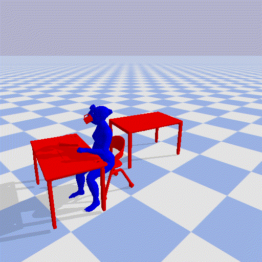

1. University of Texas at Austin 2. Adobe Research
* The work was mainly conducted at Adobe Research.
† Please contact Yi Zhou for accessing the full dataset.
Overview of the HUMOTO dataset. HUMOTO contains 4D data of human-object interactions, including 3D human poses and artists-made object meshes, and their temporal evolution. It features 736 sequences (7,875 seconds at 30fps), and 72 articulated parts. HUMOTO features Mixamo-compatible rigging and can be combined with eixisting Mixamo data.
Overview
Application: Human-Object Interaction and Motion Generation
We test MotionGPT with HUMOTO prompts. It appears that the model can generate a few reasonable motion based on the more abstract description, but fails to faithfully generate more fine-grained motions, compared to the captured ground truth HUMOTO motions.
MotionGPT Generated result based on short script (Left) and long script (Mid). Ground truth motion (Right) from HUMOTO.
PROMPT: The subject scoops ingredients using the spoon with left the hand from the deep plate. The subject adds ingredients with the left hand using the spoon to the mixing bowl. The subject mixes the content of the mixing bowl with the left hand.
Application: Robotics and Embodied AI.
We use PyBullet to compare HUMOTO with Parahome and BEHAVE in the simulation settings.
We calculate displacement by initializing the simulation with objects at their positions in the input frame, then running the physical simulation forward for 35 frames. The displacement value represents the mean Euclidean distance between each object's initial position and its final position after simulation, averaged across all objects in the scene.
Visualization of HUMOTO in the simulater. The entire sequence has displacement 1.1cm.

Visualization of ParaHome in the simulater. The entire sequence has displacement 28.3cm.
Visualization of HUMOTO in the simulater. The entire sequence has displacement 2.2cm.
Visualization of BEHAVE in the simulater. The entire sequence has displacement 10.2cm.
Application : Human motion and pose estimation
We render our 4D data to realistic videos and compare two state-of-the-art human pose estimation and tracking methods, TRAM and 4D-Humans, on our sequences.
In each sequence, the colored mesh represents the estimated human pose from the algorithm, and the white skeleton represents the ground truth human pose from HUMOTO. The estimated human pose is projected onto the image plane and overlaid on the video frame. All results are presented in the TRAM, 4D-Humans, and HUMOTO input order.
Comparison on the "tasting coffee while looking into the laptop" task. TRAM has a significant error in the human position estimation, where almost the entire human is out of camera view.
Comparison on the two person "organizing and mixing the ingredients" task. Both methods have an unstable estimation of Sophies' occluded foot position.
Comparison on the "organizing the kitchen counter" task. TRAM repeatedly fails to estimate the correct number of human in the scene. 4D-Humans has a significant rotation error in the hip joint.
Coomparison on the "transferring fruits to the side table" task. Both methods have visible errors in the hand and object tracking under such extreme camera position.
Application: Authorized 2D Generation.
Generating realistic images and videos often requires data that are difficult to capture, such as different viewpoints, object manipulation, or lighting changes. HUMOTO provides rich, human-involved scene data that can simulate object addition/removal, reveal occluded areas, and capture lighting and shadow effects. We provide two sets of examples to demonstrate the capability of HUMOTO in providing information for these tasks. One on object addition/removal and the other on hand-object interaction image editing.
(→) Gradually removing the object from the scene. HUMOTO dataset can provide the modeling, lighting and shadow effects in the occluded area.
(→) Removing the laptop from the scene and changing camera view point. HUMOTO dataset can depict the nuanced changes in the shadow and lighting.
Hand-object interaction image editing. Top row shows results generated by Affordance Diffusion. Bottom row shows the rendered images from HUMOTO. The model can only generate low-resolusion images with significant artifacts even on the hand structure. HUMOTO provides high-quality images with realistic hand-object interaction for this task
Perceptual Evaluation
We present videos on our perceptual evaluation of the HUMOTO dataset. We compare the quality of the HUMOTO datase with similar sequences in other datasets.
Sequence: Carry trash bin while walking. Left: HUMOTO, Right: BEHAVE